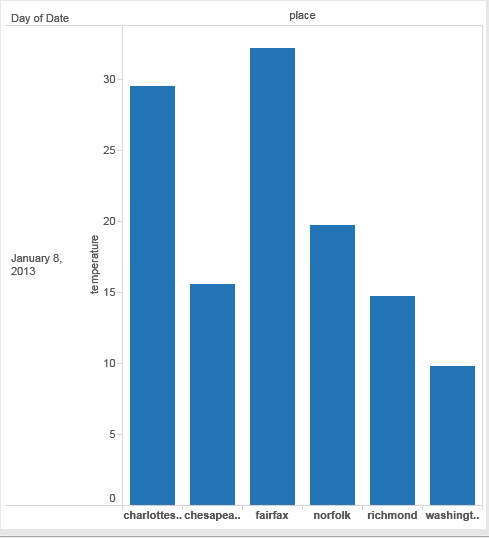

STREAM GRAPH
(using D3)
reference:http://bl.ocks.org/WillTurman/4631136
DESCRIPTION: The graph shows the varying temperature in 6 different places (Norfolk, Richmond, Charlottesville, Washington, Chesapeake and Fairfax) in the month of january .By moving the cursor across the graph we can read the values of temperature.
what data:
one quantitative value attribute (temperature),
one ordered key attribute (month january),
one categorical key attribute(place).
What:
Derived One quantitative attribute (for layer ordering)(temperature).
How:
Encode Use derived geometry showing different places(differentiated by using saturation channel) as layers across time (i.e month), layer height encodes temperature.
LINE GRAPH
(using D3)
reference:https://gist.github.com/d3noob/4414436#file-thumbnail-png
DESCRIPTION: The graph shows the change in dollar rate from 1988 to 2013.(when converted from dollar to rupee)
what data:
one quantitative value attribute(dollar to rupee conversion)
one ordered key attribute(years from 1988 to 2013)
How:
Dot chart with connection marks between dots.
Why:
Show trend.
BAR GRAPH
(using TABLEAU)
DESCRIPTION: The graph compares the temperature in different places (Norfolk, Richmond, Charlottesville, Washington, Chesapeake and Fairfax) on date 1/8/2013
what data:
one quantitative value attribute(temperature)
one categorical key attribute(place)
How:encode
Line marks, express value attribute with aligned vertical position(temperature)
separate key attribute with horizontal position(place).
Why:task
Look up and compare values.